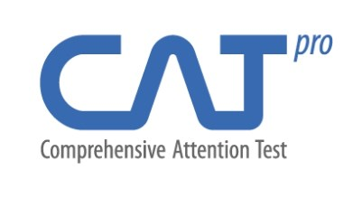

Visual attention
Evaluates the ability to accurately distinguish visual stimuli on screen and respond to the relevant ones.
Comprehensive Attention Test
Objectively evaluating multiple aspects of attention.

When concentration is difficult, attention wanders easily, or it's hard to see a task through to the end, it can be hard to simply conclude that “concentration is lacking.”
CAT (Comprehensive Attention Test) is a computerized test that comprehensively evaluates multiple aspects of attention using a computer — visual and auditory attention, sustained attention, impulse inhibition, selective attention under interference, divided attention, and working memory.
It can be used together with clinical interview and other assessments when evaluating attention problems, including ADHD.
Evaluates the ability to accurately distinguish visual stimuli on screen and respond to the relevant ones.
Looks at the ability to selectively attend to and respond to stimuli presented as sound.
Evaluates the ability to sustain attention over a period of time while inhibiting unnecessary or impulsive responses.
Looks at the ability to ignore distracting stimuli nearby and selectively respond to needed information.
Evaluates the ability to process two or more pieces of information at once and respond appropriately.
Evaluates the ability to briefly hold presented information while processing and responding to it in order.
CAT is not simply a test of whether “attention is good or bad.”
By evaluating separate domains of attention, it can show which type of attention difficulty stands out.
Results are interpreted against age-based norms, and an ADHD diagnosis is never decided from CAT results alone.
The diagnosis is determined by combining history and symptoms, developmental course, functioning at school/work and in daily life, and clinical interview.
CAT is standardized for ages 4 to 49, and the test items available differ by age.
The items needed can be selected based on the purpose of testing, age, and current symptoms.
Q. Can CAT alone diagnose ADHD?
No. CAT is a test that objectively evaluates attention function, and an ADHD diagnosis is made by combining clinical interview, symptoms and developmental history, and functioning in daily life.
Q. Can adults take this test too?
Yes. CAT can be administered from ages 4 to 49, and can also be used to evaluate ADHD and attention problems in adults.
Q. Can the results show which part of attention is difficult?
Yes. Visual and auditory attention, sustained attention, inhibitory and selective attention, divided attention, and working memory can each be examined separately.
We'll look at your current symptoms and condition together and suggest the assessment you need.